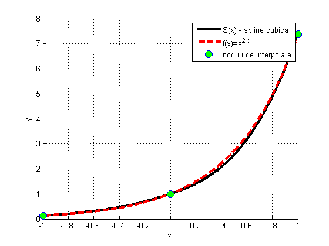
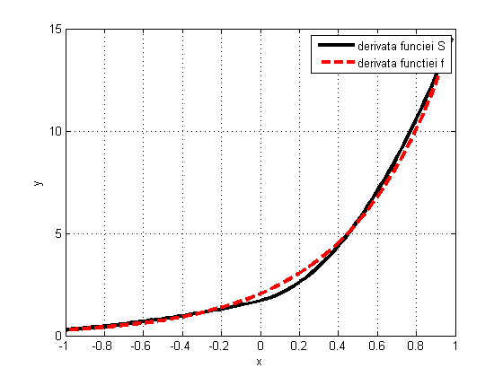
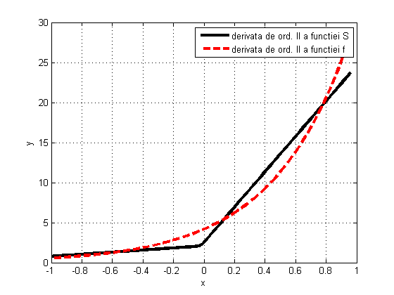

Contents
%Exercitiu V.1. b)
clear all
f=inline('exp(2*x)','x');
fp = inline('2*exp(2*x)','x');
x0=-1; xf=1; N=2;
X=linspace(x0,xf,(N+1));
Y=f(X);
x=linspace(x0,xf,100);
fpa = fp(X(1));
fpb = fp(X(N+1));
for i = 1:length(x)
S(i) = SplineC(X,Y,fpa,fpb,x(i));
end
%Exercitiu V.1. c)
figure(1)
hold on
plot(x,S,'k','Linewidth',3);
xlabel('x')
ylabel('y')
grid on
plot(x,f(x),'--r','Linewidth',3);
plot(X,f(X),'o','MarkerFaceColor','g','MarkerSize',10)
legend('S(x) - spline cubica','f(x)=e^{2x}','noduri de interpolare')

%Exercitiu V.1. d)
Sp = diff(S)./diff(x);
figure(2)
plot(x(1:length(x)-1),Sp,'k','Linewidth',3)
df = diff(f(x))./diff(x);
hold on
plot(x(1:length(x)-1),df,'--r','Linewidth',3)
grid on
legend('derivata funciei S','derivata functiei f')
xlabel('x')
ylabel('y')
Ss = diff(Sp)./diff(x(1:length(x)-1));
hold on
figure(3)
plot(x(1:length(x)-2), Ss,'k','Linewidth',3)
d2f = diff(df)./diff(x(1:length(x)-1));
hold on
plot(x(1:length(x)-2), d2f,'--r','Linewidth',3)
grid on
legend('derivata de ord. II a functiei S','derivata de ord. II a functiei f')
xlabel('x')
ylabel('y')
 